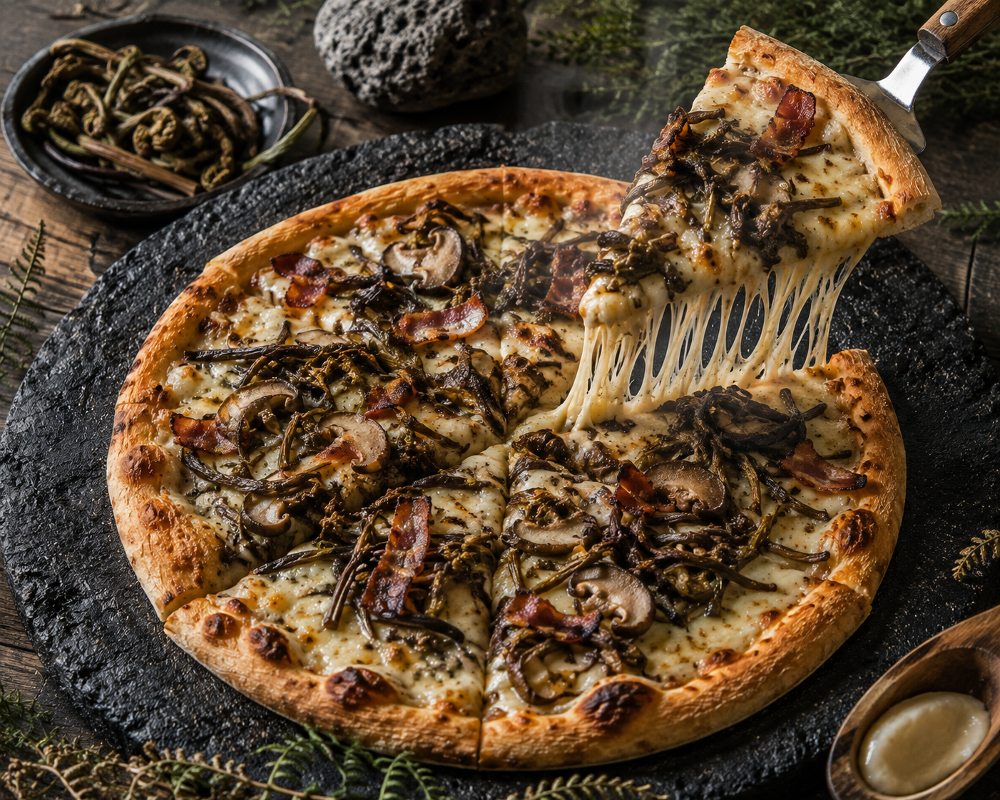
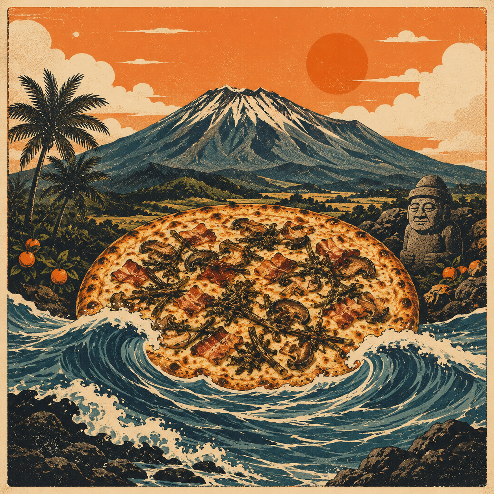
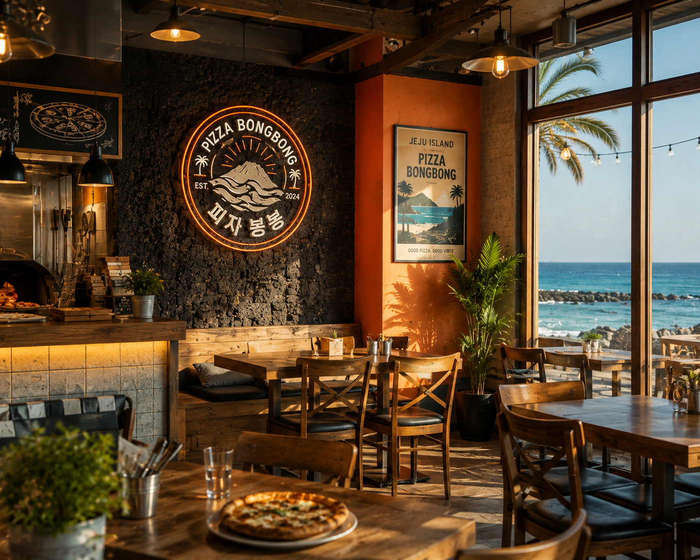
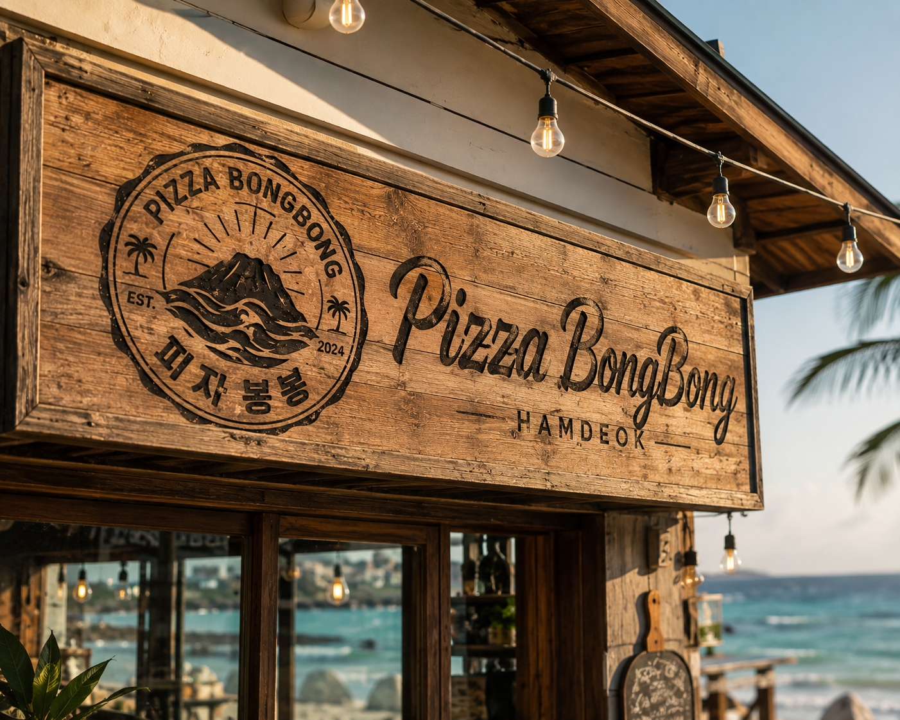

고사리봉봉 피자
제주 고사리 · 표고버섯 · 흑돼지 베이컨
깊고 고소한 제주의 산17,000
제주의 산과 바다를 한 판에
EST. 2024GOOD PIZZA, GOOD VIBES
한라산에서 자란 고사리와 당근, 바다에서 건진 전복까지. 함덕의 풍경과 제주 로컬 재료를 피자 한 판에 담았습니다.


BORN IN HAMDEOK
친구들과 뛰놀던 바다, 해 질 무렵의 따뜻한 빛, 파도 소리를 들으며 나누던 이야기. 그 기억을 누구나 맛볼 수 있는 피자로 만들고 싶었습니다.
“한라산이 피자가 된다면?”
피자봉봉은 제주 로컬 재료를 낯설지 않게, 그러나 분명히 새롭게 풀어냅니다. 여행의 하루를 채우는 한 끼를 넘어 오래 기억되는 제주 브랜드를 만들어갑니다.
A DATE BY THE SEA
낮에는 에메랄드빛 함덕 바다, 저녁에는 노을과 따뜻한 조명. 둘만의 제주 여행에 여유로운 피맥 한 장면을 더해보세요.
